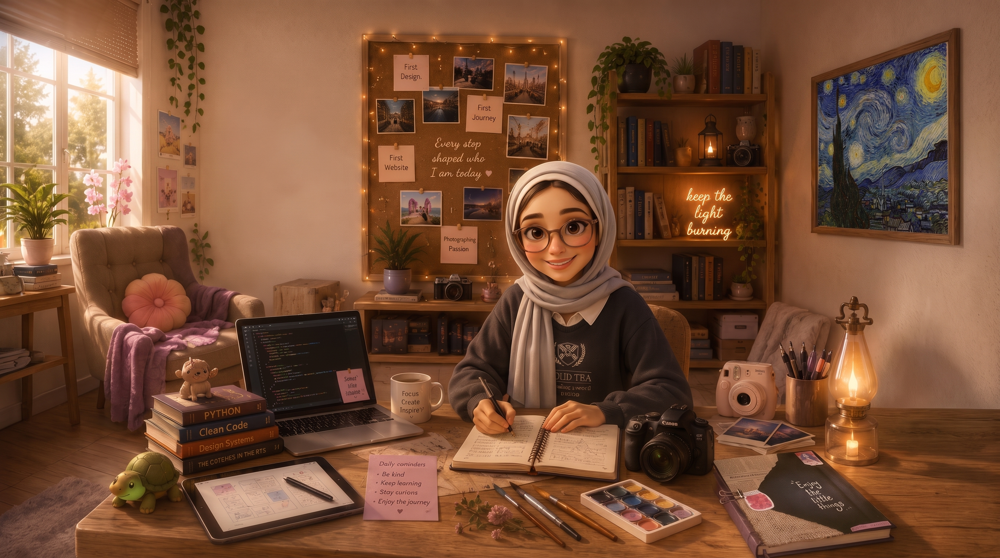

“Before I show you what I've built, I'd like to show you what built me.”
Scroll down. The camera will do the walking, through the desk, the shelf, the corkboard, and the corner where it all happens.

Chapter 1
The desk
This is command central — where most of my days actually happen. Tap what catches your eye.
↑ tap the glowing dots on the photo
Chapter 2
The shelf
A camera, a lantern, and a sign I wrote for myself more than anyone else.
↑ tap the glowing dots on the photo
Chapter 3
The corkboard
Every stop shaped who I am today. These four pins are where it started.
↑ tap the glowing dots on the photo
Chapter 4
The reading corner
Where I slow down. Most of what ends up on my desk started here first.
↑ tap the glowing dots on the photo
One last look
The whole room
Every corner, every object — together, they're the room that built me.
The library
Not random books — each one is part of how I think. Tap a spine.
Tap a book to see what it taught me.
That's what built me.
The rest of the house is still being furnished, room by room. Thanks for spending a few minutes in mine.
Back to the home map